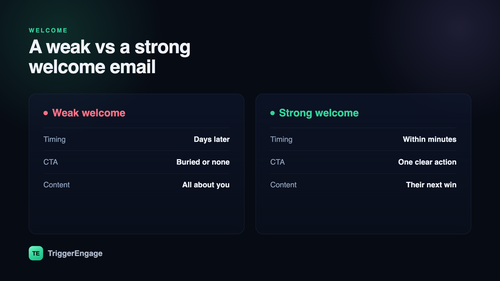

The welcome email is the most-opened message you will ever send — and the most wasted. Someone just handed you their address and leaned in, expecting to hear from you. That is a rare moment of full attention, and most brands spend it on a wall of links, a company history no one asked for, or nothing at all for three days. A great welcome email does one thing well: it confirms the person made a good decision and points them at their first win. Here is how to write one, plus the short sequence that should follow it.

Why the welcome email matters more than any other
Two things make the welcome email special. First, timing: it arrives at the exact instant of highest interest, when the person has just chosen you. Second, expectation: unlike a broadcast that interrupts, a welcome is anticipated — the recipient is waiting for it. That combination is why welcome emails routinely see open rates north of 50%, several times a typical newsletter. You will never again have this much of someone's attention this cheaply. The question is whether you spend it well.
Spending it well means resisting the urge to say everything. The instinct is to cram in the product tour, the social links, the blog, the referral program, and the sale. The result is a message with no center of gravity that gets skimmed and forgotten. Restraint is the whole game.
The anatomy of a welcome email that works
Every strong welcome email shares the same bones, whatever the brand:
- A warm, human greeting that confirms the sign-up worked. Relief is an underrated emotion — the reader wants to know the button did what it promised.
- One clear next step. Not five. The single most valuable action a new user can take — complete your profile, make your first playlist, book a call, place your first order — gets the one prominent button.
- A reason it's worth it. Frame the CTA around the reader's outcome, not your feature. "Set up your first automation" beats "Explore the dashboard."
- A note on what's next. One line setting expectations — how often you'll email, and what they'll get — builds trust and lowers unsubscribes.
Notice what is absent: your founding story, a menu of equally-weighted links, and a hard sell. Those can come later, in the sequence. The first email earns the right to send the rest.
Timing: send it now
The welcome email should land within seconds of sign-up, not hours or days later. This is a job for a real-time trigger, not a nightly batch — the moment a user.created event fires, the email should be on its way. If you are wiring this into your own stack, it is the canonical first use of event-based email: an action happens, a message goes out immediately. A welcome that arrives the next morning has already lost most of its power, because the attention that made it special has moved on.
Subject lines that earn the open
Because welcome emails are expected, you do not need clever bait — you need clarity and a little warmth. The strongest subject lines confirm the relationship and hint at the value inside: a simple "Welcome to [Product] — here's your first step," a friendly "You're in. Let's get you set up," or something that leads with the outcome, "Your account is ready — make your first [thing]." Save the wordplay for campaigns; here, plain and welcoming wins. Keep it short enough to survive a phone's preview, and let the personalization (a first name, the plan they chose) feel natural rather than forced.
From one email to a welcome sequence
The best welcome email is the opening move, not the whole game. Follow it with a short sequence over the first week that walks the new user to their first real outcome — the "aha" moment that predicts whether they'll stay. Each message should have one job and be triggered by where the person is, not just how many days have passed:
- Day 0 — Welcome: confirm, orient, one CTA to the first step.
- Day 1 — Nudge: if they haven't taken the first step, help them past it.
- Day 3 — First win: show the core feature that delivers value, with a quick path to try it.
- Day 5–7 — Check-in: ask how it's going, offer help, and point to what's next.
This is really an activation flow wearing a friendly face. For the templates and triggers behind each step, see our guides to onboarding emails and the broader lifecycle sequences that carry a customer from sign-up to loyalty. Skip anyone who already activated — a "get started" nudge to someone who's up and running reads as noise.
A weak welcome vs a strong one
The gap between a forgettable welcome and a great one is rarely visual polish. It is these three choices:
| Weak welcome | Strong welcome | |
|---|---|---|
| Timing | Hours or days later | Within a minute of sign-up |
| Call to action | Five competing links | One clear next step |
| Content | About the company | About the reader's first win |
| Expectations | None set | What's coming, and how often |
Respect consent from the first send
A welcome email is also the moment your relationship becomes official, so start it on the right footing. If you use double opt-in, the welcome is the natural reward for confirming — it arrives right after the person verifies their address, which keeps your list clean and your deliverability high. If you're weighing how to collect and honor that permission, our guide to double opt-in and email consent covers the trade-offs. Getting consent right here pays off across every message that follows.